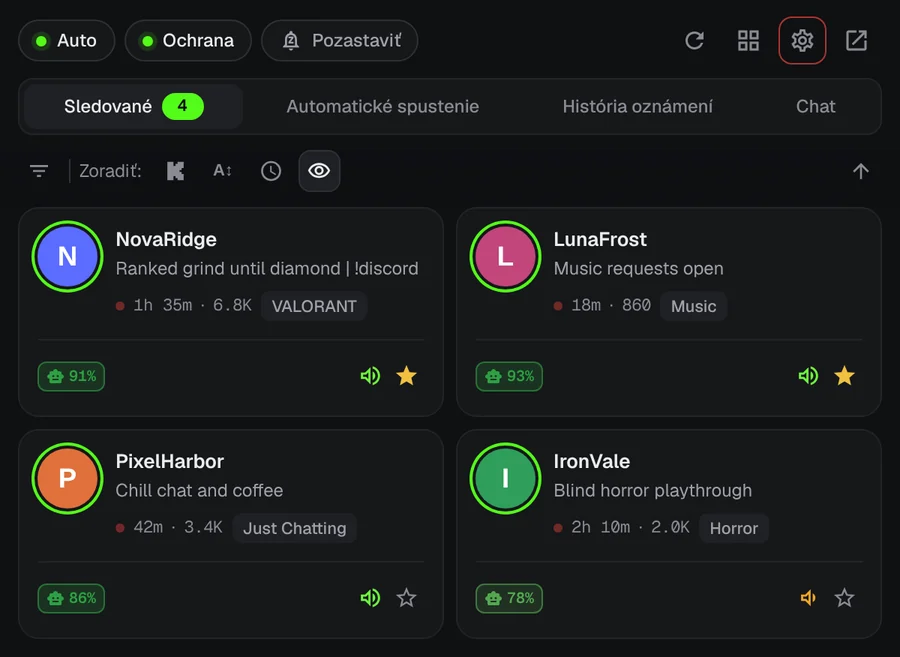
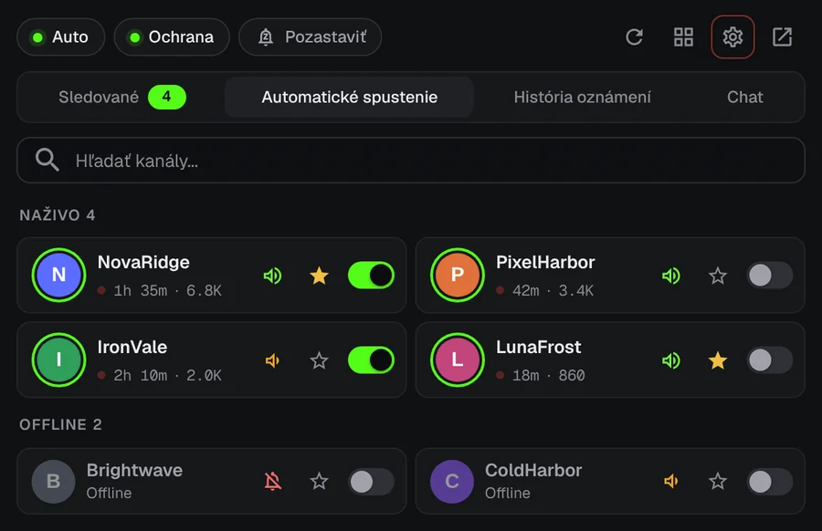
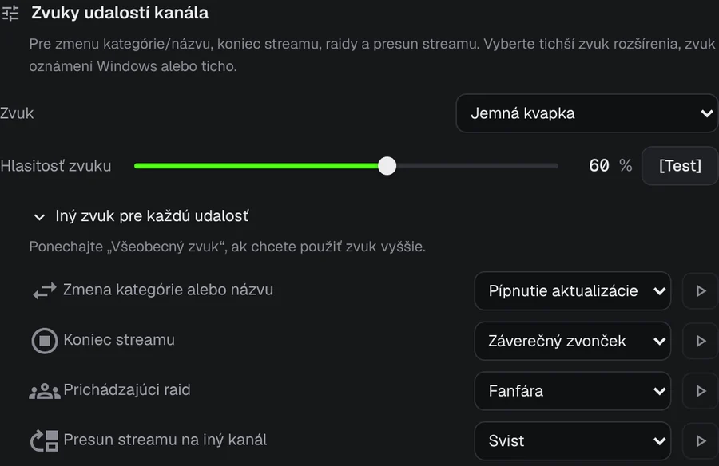
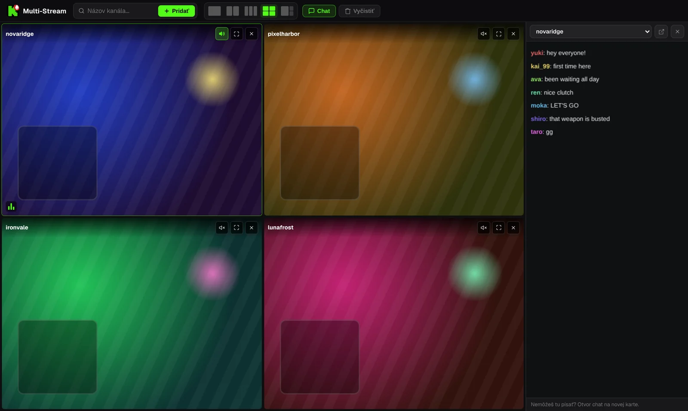

Už nikdy nezmeškaj začiatok streamu na Kicku.
Tvoj obľúbený streamer začne vysielať o 3 ráno. KickAlert ti v tej chvíli pošle upozornenie na plochu, aj keď nemáš otvorenú kartu Kick. Zadarmo, bez obmedzenia počtu kanálov a bez sledovania.
Čoskoro aj pre Edge a Operu
 KickAlert
KickAlertVyskúšaj to. Stlač zvonček.
Tieto kanály sú offline. Zapni zvonček pri jednom z nich a uvidíš, čo sa stane, keď začne vysielať.
Okamžité upozornenia
KickAlert počúva spojenie Kicku v reálnom čase, takže upozornenie príde vo chvíli, keď stream začne, nie o pár minút neskôr. Vyber zvuk pre každý kanál, nastav režim Nerušiť alebo všetko pozastav do rána.

Automatické spustenie
Vyber kanály, ktoré sa majú otvárať samy. Stream sa otvorí v novej karte hneď po začiatku, bez duplikátov, a karta sa môže zavrieť, keď raid presunie stream inam.

Vedieť, čo sa stalo
Pre raidy, koniec streamu, zmenu kategórie aj presunutý stream môžeš pri každom kanáli nastaviť vlastné upozornenie a vlastný zvuk.

Radar chatu
Sleduj až 5 chatov naraz a dostaneš upozornenie, keď sa v nich objaví tvoje meno alebo zvolené slovo, aj keď je Kick zatvorený. Filtre chatu skryjú spam a zachytia slová napísané podobne vyzerajúcimi písmenami.
Až štyri streamy v jednej karte
Streamy začínajú stlmené. Zvuk toho, ktorý chceš, zapneš jedným kliknutím. Chat je v bočnom paneli.

Obsah streamov je ilustračný.
Tvoje dáta zostávajú v prehliadači
- Žiadna analytika, žiadne sledovanie
- Komunikuje len s kick.com
- Každé povolenie vysvetlené pri prvom spustení
- Zdrojový kód verejne na GitHube
Otázky
Je KickAlert zadarmo?
Áno. Všetky funkcie sú zadarmo a počet sledovaných kanálov nie je obmedzený.
Musím mať Kick otvorený?
Nie. KickAlert beží na pozadí a upozorní ťa, aj keď nemáš otvorenú žiadnu kartu Kick. Stačí byť v rovnakom prehliadači prihlásený na Kick.
Nainštaloval som ho, ale upozornenia nechodia.
Nové inštalácie začínajú potichu, aby ťa upozornenia nezahltili. Zapni zvonček pri kanáloch, ktoré chceš, alebo v Nastaveniach pre všetky kanály naraz. Kontrola „Príde od tohto kanála upozornenie?“ v nastaveniach každého kanála ukáže, čo ďalšie by mohlo upozornenie blokovať.
V ktorých prehliadačoch funguje?
Teraz v Chrome a Firefoxe, Edge a Opera sú na ceste. Brave, Vivaldi a ďalšie prehliadače na Chromiu ho môžu nainštalovať z Internetového obchodu Chrome.
Nainštalovať KickAlert
Čoskoro aj pre Edge a Operu